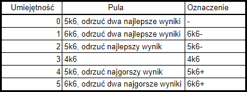

Rzuty
Aby uzyskać pozytywny wynik testu musisz wyrzucić więcej niż wynosi Poziom Trudności. Podczas wykonywania testu:
1. Wybierz co chcesz zrobić: to określi Umiejętność jakiej użyjesz
2. Opisz jak to robisz: to określi Postawę której użyjesz
3. Rzuć pulą zależną od Umiejętności (patrz tabelka po prawej). Zsumuj wyniki na odpowiednich kostkach i dodaj do tego poziom używanej Postawy.
Przykład:
Chcąc zastraszyć postać musisz użyć Zastraszania (bo do tego ta umiejętność służy). Sposób w jaki zastraszanie wykonasz zależy od Ciebie: jeśli chcesz zagrozić komuś bezpośrednio, sprawić by bał się Twojej siły - użyjesz Dominacji. Jeśli chcesz zrobić na nim wrażenie, wzbudzić emocje i urządzić mały show - użyjesz Zawady.
Przewagi i Problemy
Czasami okoliczności, specjalne zdolności lub sytuacja sprawiają że trudność testu należy zmodyfikować. Każda sprzyjająca okoliczność, nazywana Przewagą, zapewnia bonus odpowiadający posiadaniu umiejętności o 1 większej. Analogicznie, okoliczności utrudniające, czyli Problemy, zmniejszają efektywną umiejętność o 1.Zapamiętywanie
PS Wiem że zapamiętanie iloma kostkami rzucasz jest trudne :/Najwygodniej to chyba zapamiętać tak:
- kiedy masz dodatnią Umiejętność pod uwagę zawsze bierzesz 4k6
- kiedy masz Umiejętność na poziomie 3 rzucasz dokładnie 4k6
- za każdy poziom poniżej otrzymujesz kostkę karną: rzucasz więc dodatkową kością, ale musisz odrzucić najlepszy wynik. Analogicznie za każdy poziom powyżej otrzymujesz kostkę bonusową.